Package Version Citation
1 base 4.2.2 @base
2 correlation 0.8.4 @
3 easystats 0.6.0.8 @easystats
4 ggstatsplot 0.9.4 @ggstatsplot
5 knitr 1.41 @knitr2014; @knitr2015; @knitr2022
6 pacman 0.5.1 @pacman
7 rmarkdown 2.14 @rmarkdown2018; @rmarkdown2020; @rmarkdown2022
8 see 0.8.0.2 @see
9 tidyverse 1.3.2 @tidyverse
10 xaringan 0.26 @xaringan
11 xaringanExtra 0.7.0 @xaringanExtra
12 xaringanthemer 0.4.1 @xaringanthemerNHST and p-values (Everything you ever wanted to know about p-values)
Princeton University
Jason Geller, PH.D.(he/him)
2023-10-08
Packages
Today
Null hypothesis significance testing (NHST)
1 vs 2 tailed tests
p-values
Steps in NHST
Type 1 and Type 2 error
p-value misconceptions
Applying NHST to correlation data
Recap
Sampling Distribution: The probability distribution of a given statistic (e.g., mean) taken from a random sample
Constructing a Sampling Distribution
Randomly draw n sample points from a finite population with size N
Compute statistic of interest
List different observed values of the statistic with their corresponding frequencies
Recap
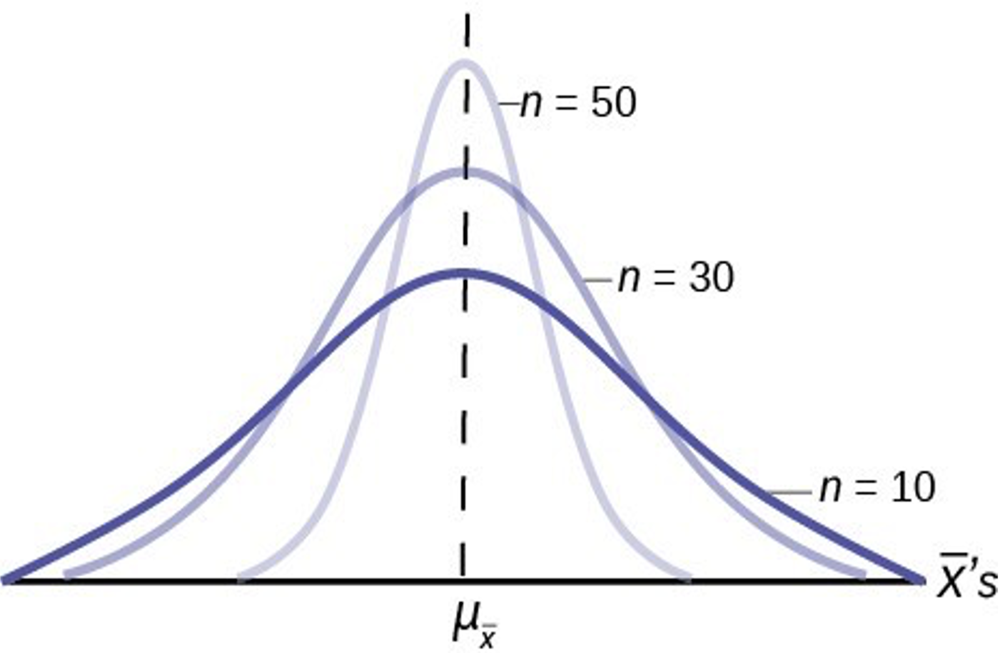- As n increases we become more confident (less spread) of our estimate of the population mean
Recap: t distribution
if \(\sigma\) unknown, we need to use t distribution
Similar to normal, but fatter tails (more conservative) for lower DF
Recap: CIs
CIs: Interval or range that encompasses true parameter value
- Level of confidence
- 95% is most common
- Level of confidence
Calculation:
Lower: estimate - MoE
Upper: estimate + MoE
Statistical Inference
- Estimation
- Test relationships (hypothesis testing)
Proof by contradiction
- NHST is proof by contradiction
To prove a mathematical statement, A, you assume temporarily that A is false. If that assumption leads to a contradiction, you conclude that A must actually be true
NHST
Negate the conclusion: Begin by assuming the opposite – that there is no relationship between X and Y.
Analyze the consequences of this premise: If there is no relationship between X and Y in the population, what would the sampling distribution of the estimate of the relationship between X and Y look like?
Look for a contradiction: Compare the relationship between X and Y observed in your sample to this sampling distribution. How (un)likely is this observed relationship?
- If small, then there is evidence there is a relationship
NHST
Null Hypothesis \(H_0\): There is no significant difference
- 0 in population (does not have to be this)
Alternative Hypothesis \(H_1\): There is a statistically significant difference
- Some difference
An Example
Toftness, Carpenter, Geller, Lauber, Johnson, and Armstrong (2017)
- Does fluency of the instructor lead to better learning of the material?
Disfluent
Fluent
Null and Alternative Example
Does fluency of the instructor lead to better learning of the material?
Null Hypothesis: \(H_0\) : \(\mu_f\) = \(\mu_d\)
Alternative Hypothesis: \(H_1\) : \(\mu_f\) \(\not=\) \(\mu_d\)
Two-sided and One-sided Alternative Hypotheses
Two-sided: \(H_0\) : \(\mu_f\) = \(\mu_d\) ; \(H_1\) = \(\mu_f\) \(\not=\) \(\mu_d\)
One-sided: \(H_0\) = \(\mu_f\) = \(\mu_d\) ; \(H_1\) = \(\mu_f\) > \(\mu_d\)
One-sided: \(H_0\) = \(\mu_f\) = \(\mu_d\) ; \(H_1\) = \(\mu_f\) < \(\mu_d\)
Only use a one-sided / directional hypothesis if you have a strong theoretical prediction (for example, from a model) or you preregister it
- Can gain statistical power
We can accommodate both two-tailed and one-tailed tests statistically
Define your level of significance (α)
Level of significance (α): Probability of rejecting the \(H_0\) hypothesis when \(H_0\) is true
α = 0.05
Some use others (e.g. 0.01, 0.0000003 particle discovery in high energy physics)
Two Tailed Test
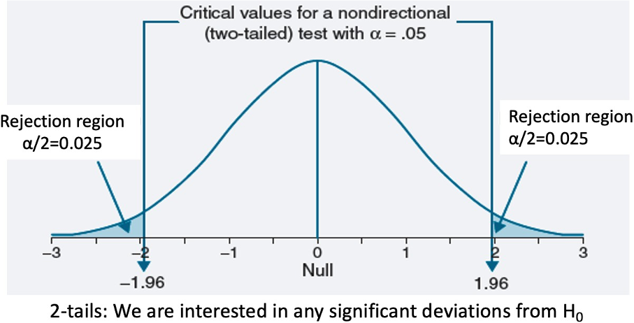The sum of the tails sums to α (0.025 in each tail for a two-tailed when α = 0.05)
See where the statistic lies relative to a ‘critical score’ that depends on defined alpha (same procedure used to calculate confidence intervals)
For the right and left tail, if the test statistic > 1.96 or less than -1.96 (critical value) reject null & accept alternative
One Tailed Test
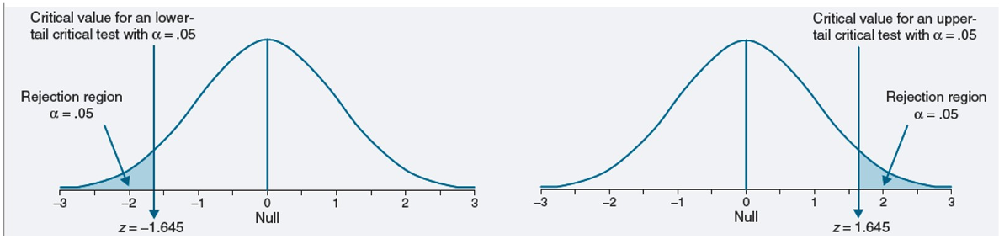0.05 in each tail
If statistic within rejection region = reject null & accept alternative
Do you see why you get power with a one-sided / directional hypothesis?
Should I use a one-tailed or two-tailed test?
Always use two-tailed when there is no directional expectation
- There are two competing predictions
Can use one-tailed when strong justification for directional predictions
Caution
- Never follow up with one-tailed if two-tailed is not statistically significant
P-worship
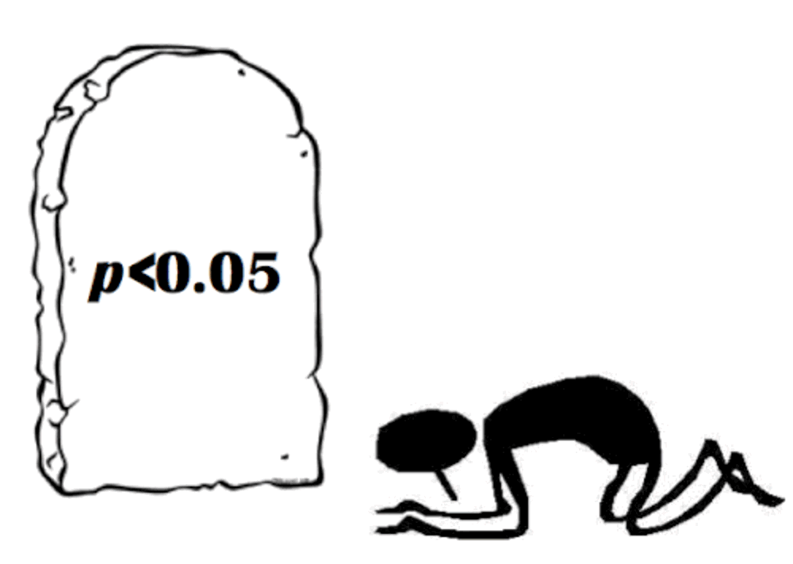P-hacking
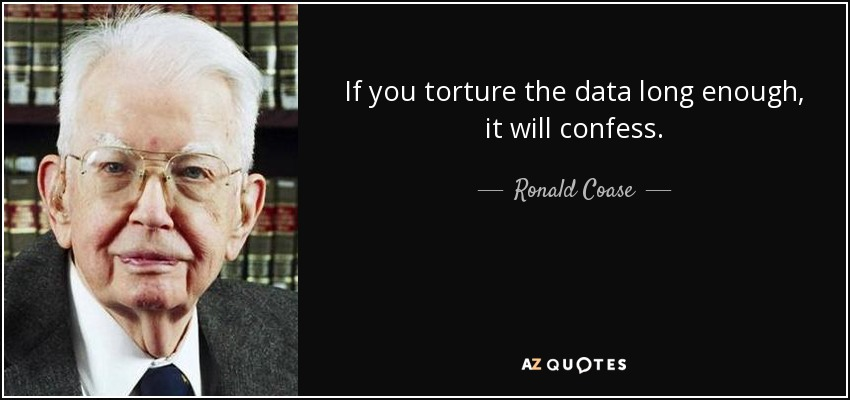P-hacking: trying lots of analyses until you get desired outcome
P-hacking
- Stop collecting data once p < .05
- Analyze many measures, but report only those with p <.05
- Collect and analyze many conditions, but only report those with p < .05
- Use covars to get p < .05
- Exclude participants to get p < .05
- Transform the data to get p < .05
What is a p-value?
The probability of observing the sample data, or more extreme data, assuming the null hypothesis is true
\[ P(D|H_0) \]
- How surprising something is
p-value

p-value: Schools of Thought
Ronald Fisher:
Quantifying evidence
- Smaller p-value provides stronger evidence against the null hypothesis
Neyman and Pearson:
- p-value is only used to check if it is smaller than the chosen \(\alpha\) level, but it does not matter how much smaller it is
p-value Conventions
- Conventions:
- p < 0.05: significant evidence against \(H_0\)
- p > 0.10: non-significant evidence against \(H_0\)
- 0.05 < p < 0.10: marginally significant evidence against \(H_0\)
p-value conventions
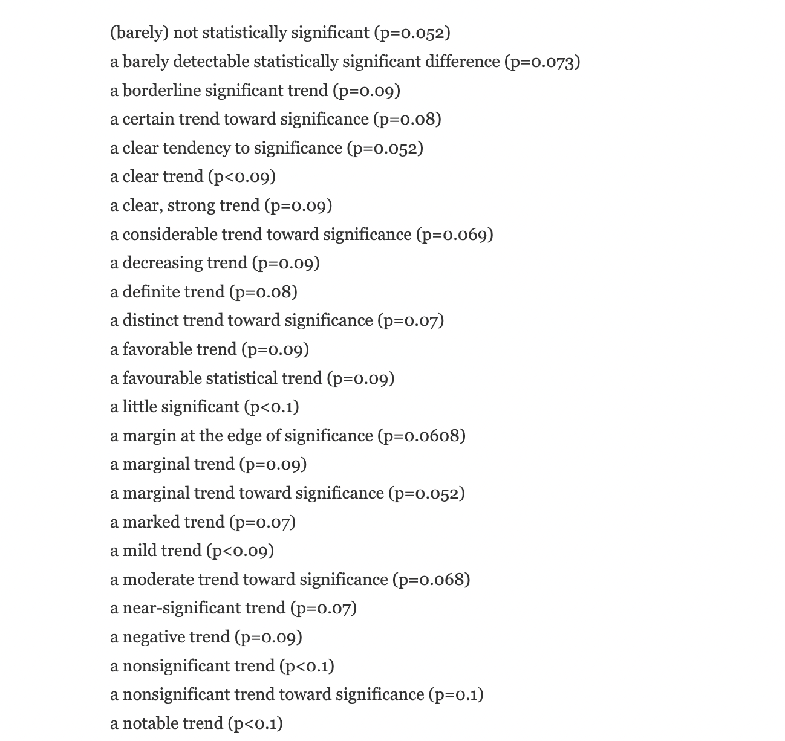Which p-values can you expect?
- Which p-values can you expect to observe if there is a true effect, and you repeat the same study 100000 times?
Lakens
Which p-values can you expect?
- Which p-values can you expect if there is no true effect, and you repeat the same study 100000 times?
Lakens
Hypothesis Testing
Steps for Hypothesis Testing
State null hypothesis and alternative hypothesis
Calculate the corresponding test statistic and compare the results against the “critical value”
State your conclusion
Steps for Hypothesis Testing
Step 1
Convert the research question to null and alternative hypotheses
- The null hypothesis (\(H_0\)) is a claim of “no difference in the population”
- No difference between a population parameter and hypothesized value: \(H_0\) : 𝛍 = 7.56
- No difference between one population parameter and another: \(H_0\) : \(\mu_f\) = \(\mu_d\)
- We usually want to reject this hypothesis
The alternative hypothesis (\(H_1\)) claims \(H_0\) is false: There is some difference
- Difference between one population parameter and another: \(H_0\) : \(\mu_f\) \(\not=\) \(\mu_d\)
Steps for Hypothesis Testing
Step 2
Calculate the corresponding test statistic and compare the result against the “critical value”
t, z, F
- Is the test statistic > or < than critical value?
A value of the test statistic is interesting if it has only a small chance of occurring when the null hypothesis is true
Steps for Hypothesis Testing
Step 2
- Define your level of significance (α)
α Interpretation: If we were do this experiment many many times, we would only expect 5% (or another level of significance) to be Type 1 Error
Steps for Hypothesis Testing
Step 3
State your conclusion
- Reject the null p < \(\alpha\)
- Fail to reject the null p > \(\alpha\)
Type 1 and Type 2 Error Rates
- You think the manipulation worked, but it really doesn’t
- Type 1 error
- You don’t think the manipulation worked, but it really does
- Type 2 error

Type 1 and Type 2 Error Rates
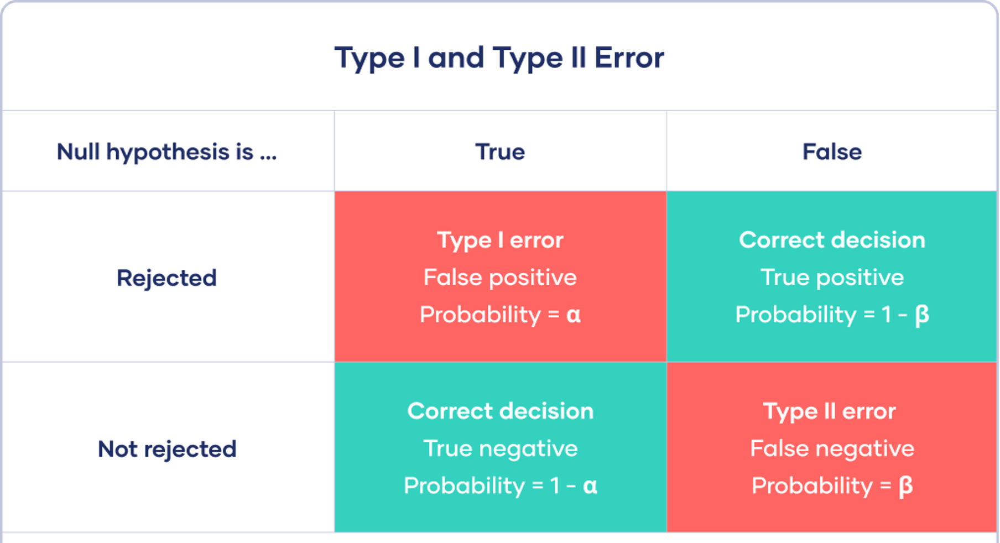Correctly reporting and interpreting p-values
Exact p-values (3 decimal places)
p-values reference the observed data and not a theory
Report \(\alpha\)
Do not use p-values as a measure of evidence
p-value misconceptions (Lakens)
Misconception 1: A non-significant p-value means that the null hypothesis is true
Common to use:
p > .05, the null hypothesis is true
p > .05, there is no effect
p-value Misconceptions (Lakens)
Misconception 2: A significant p-value means that the null hypothesis is false
Say instead:
“A reliable difference”
“A statistical significant difference”
p-value Misconceptions (Lakens)
Misconception 3: A significant p-value means that a practically important effect has been discovered
p-value Misconceptions (Lakens)
Misconception 4: If you have observed a significant finding, the probability that you have made a Type 1 error (a false positive) is 5%
Type 1 error rate references all studies we will perform in the future where the null hypothesis is true
Not more than 5% of our observed mean differences will fall in the red tail areas
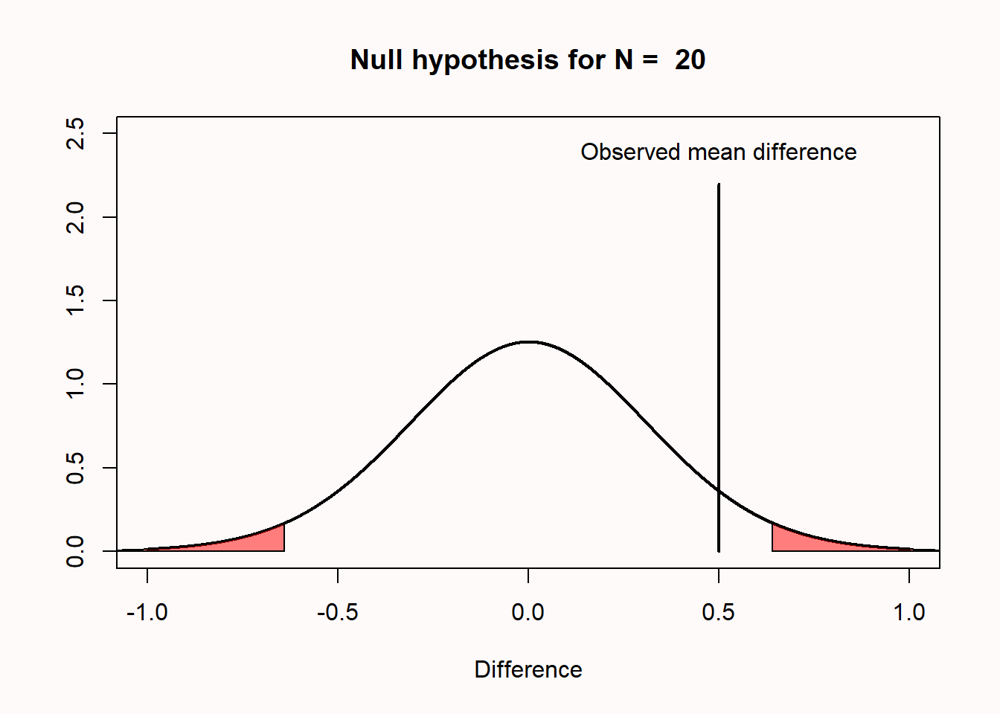
p value Misconceptions (Lakens)
Misconception 5: One minus the p-value is not the probability of observing another significant result when the experiment is replicated
- The dance of the ps
Applying NHST: Correlations
Dataset
Mental Health and Drug Use:
- CESD = depression measure
- PIL total = measure of meaning in life
- AUDIT total = measure of alcohol use
- DAST total = measure of drug usage
Dataset
CESD = depression measure
PIL total = measure of meaning in life
- What do you think relationship looks like?
Dataset
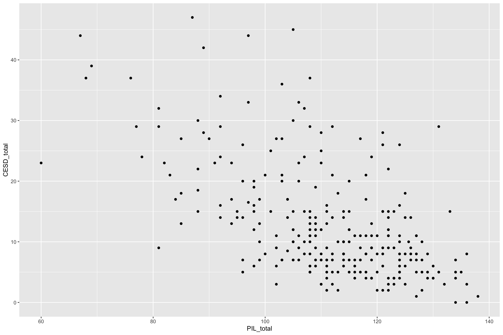Correlation (r)
Quantifies relationship between two variables
Direction (positive or negative)
Strength
+1 is a perfect positive correlation
0 is no correlation (independence)
-1 is a perfect negative correlation
Correlations

Effect Size Heuristics
- r < 0.1 very small
- 0.1 ≤ r < 0.3 small
- 0.3 ≤ r < 0.5 moderate
- r ≥ 0.5 large
Covariance and Correlation
- Pearson’s r
\[covariance = \frac{\sum_{i=1}^n (x_i - \bar{x})(y_i - \bar{y})}{N - 1}\] \[r = \frac{covariance}{s_xs_y} = \frac{\sum_{i=1}^n (x_i - \bar{x})(y_i - \bar{y})}{(N - 1)s_x s_y}\]
- Let’s go to R!
Statistical Test: Pearson’s r
\(H_0\) r = 0
\(H_1\) r \(\not=\) 0
- \(\alpha\) = .05
\[\textit{t}_r = \frac{r\sqrt{N-2}}{\sqrt{1-r^2}}\]
Scatter plot
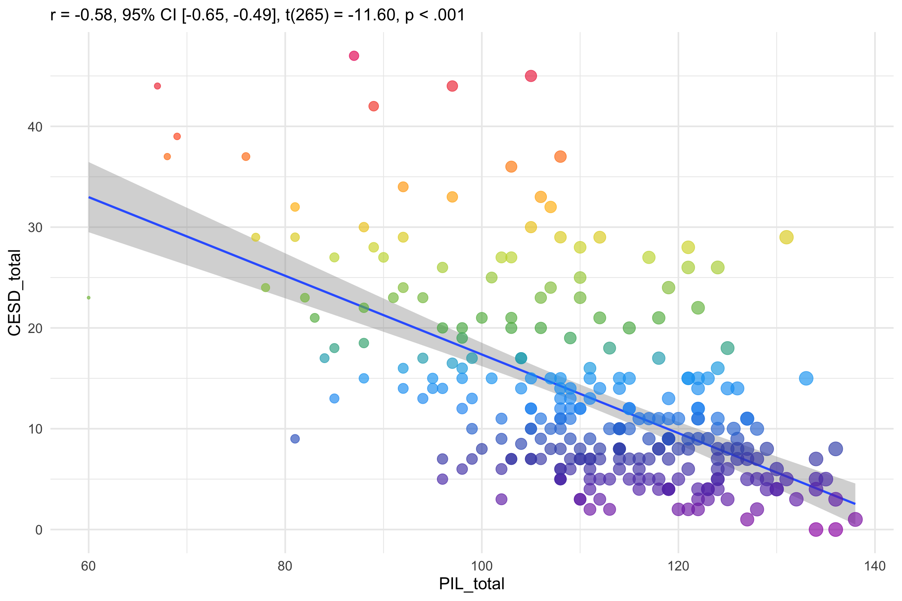Scatter plot
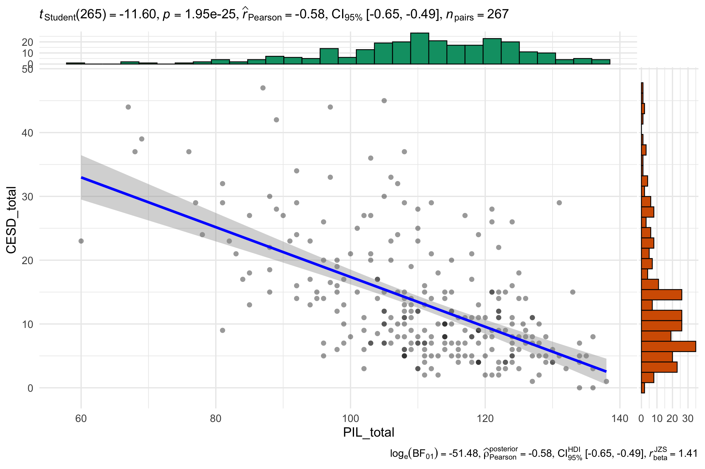Non-parametric Correlation
Spearman’s rank correlation coefficient :
\[ r_s = 1 - \frac{6 \sum d_i^2}{n(n^2 - 1)} \]
It assesses how well the relationship between two variables can be described using a monotonic (increasing or decreasing) function
Rank order method
Range [-1,+1]
Statistical Test: Spearman’s r
Correlation Write-up
PSY 503: Foundations of Statistics in Psychology